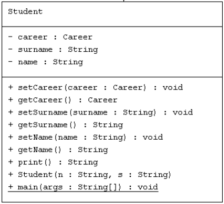

Computer Programming 2
Gino Perna
Dipartimento di Ingegneria e Scienza dell'Informazione
Università degli Studi di Trento
AA 2021-2022
Implement an Electronic Logbook to take into account:
Implement this with test procedures for all classes!
Add also an ID
The basic idea in top-down approach is to break a complex algorithm or a problem into smaller segments called modules, this process is also called as modularization. The modules are further decomposed until there is no space left for breaking the modules without hampering the originality. The uniqueness of the problem must be retained and preserved. The decomposition of the modules is restricted after achieving a certain level of modularity. The top-down way of solving a program is step-by-step process of breaking down the problem into chunks for organising and solving the sole problem. The C- programming language uses the top-down approach of solving a problem in which the flow of control is in the downward direction.
Bottom up programming is the opposite of top-down programming
In this approach we start working from the most basic level of problem solving and moving up in conjugation of several parts of the solution to achieve required results. The most fundamental units, modules and sub- modules are designed and solved individually, these units are then integrated together to get a more concrete base to problem solving.
This bottom-up approach works in different phases or layers. Each module designed is tested at fundamental level that means unit testing is done before the integration of the individual modules to get solution. Unit testing is accomplished using low-level functions, that is another topic we will talk about later.
What is a stub?
Stubs are used during Top-down integration testing, in order to simulate the behaviour of the lower-level modules that are not yet integrated. Stubs are the modules that act as temporary replacement for a called module and give the same output as that of the actual product.
Stubs are also used when the software needs to interact with an external system.
Flow Diagram
The diagram on the right clearly states that Modules 1, 2 and 3 are available for integration, whereas, the other modules are still under development and cannot be integrated at this point of time. Hence, Stubs are used to test the modules. The order of Integration will be:
Testing approach
Bottom-up programming has several advantages over top-down programming. Testing is simplified since no stubs are needed. While it might be necessary to write test functions, these are simpler to write than stubs, and sometimes not necessary at all.
Pieces of programs written bottom-up tend to be more general, and thus more reusable, than pieces of programs written top-down.
It also makes it possible to delay the final decision concerning the exact functionality of the application. Being able to delay this decision makes it less likely that the client has changed his or her mind between the establishment of the specifications of the application and its implementation.
Let' s write the program starting from Exams and going backwards
Why do we use the Date Object?
How do we parse a Date? (from string to date object)
How do we print a Date? (from date object to string)